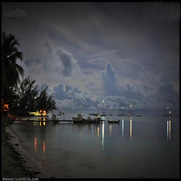

Anegada, the second largest of the British Virgin Islands, is the only island in the archipelago that was formed entirely of coral and limestone. In comparison to the other islands, Anegada is very flat and its' higest point is shy of 30ft above sea level. 
You can learn more about Anegada by visiting the B.V.I. Tourists Board s website.